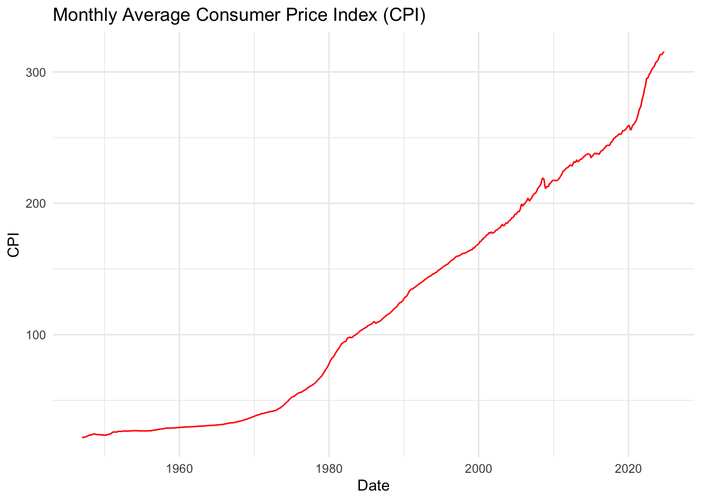
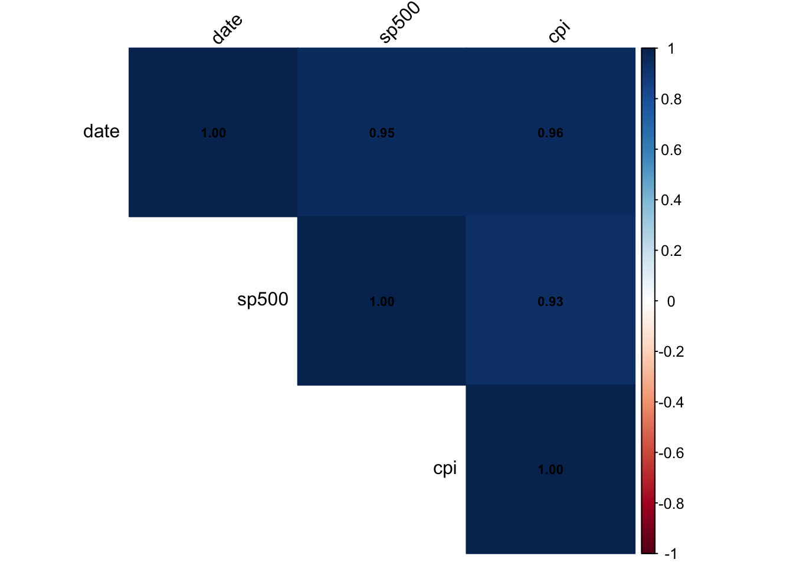
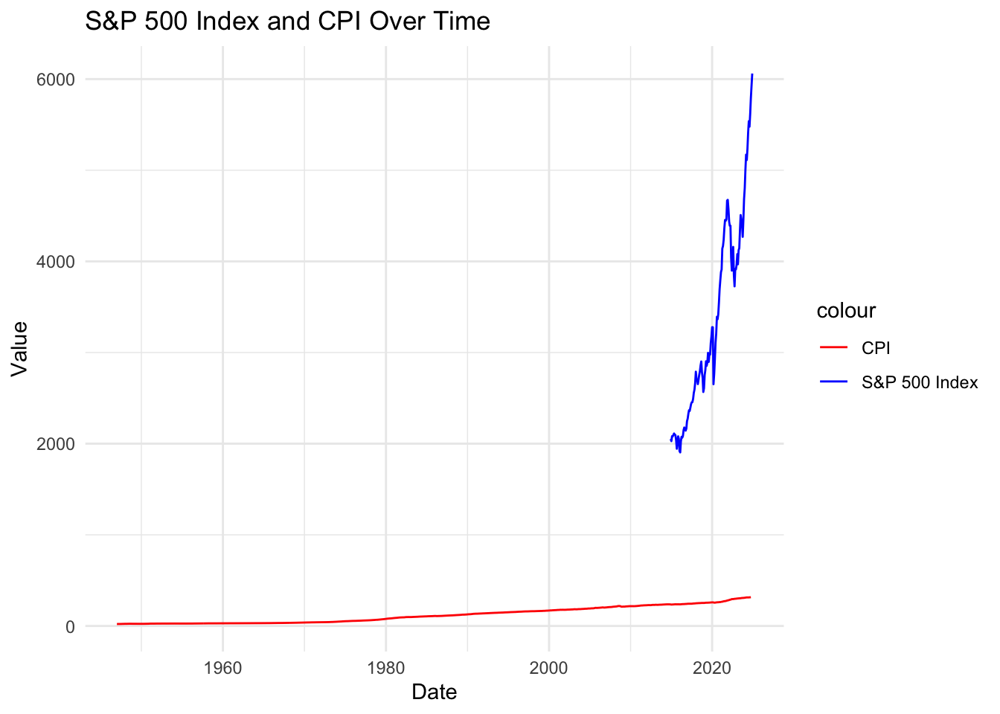
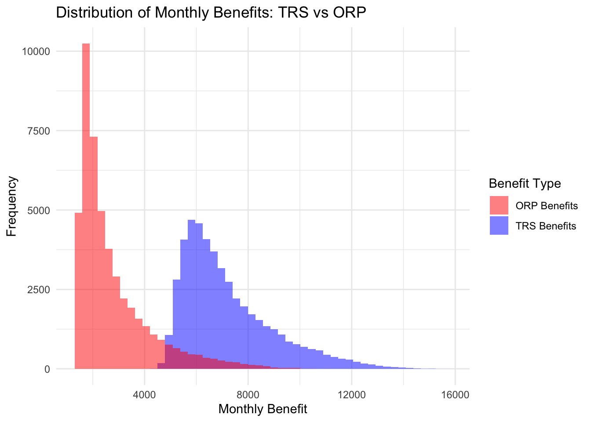

Mini-Project 4: Monte Carlo-Informed Selection of CUNY Retirement Plans
Author
Cheick Amed Diallo
Welcome to Mini-Project #04! In this project, R will be used to make a crucial personal financial decision. As a new faculty member at CUNY, who has 30 days to choose between two retirement plans. This decision is significant and must be made early, as it is essentially permanent and cannot be changed later. Financial forecasting is challenging, and determining which plan is the better long-term choice is not straightforward. In this mini-project, I will utilize historical financial data and a bootstrap inference strategy to estimate the probability that one plan is more advantageous than the other.
Task 1: Register for AlphaVantage API Key
Register and obtain your AlphaVantage API key.
Store the key securely in a plain text file (e.g., alphavantage_key.txt).
Task 2: Register for FRED API Key
Register and obtain your FRED API key.
Store the key securely in a plain text file (e.g., fred_key.txt).
Task 3: Data Acquisition
In this part, I used the SP500 as an example to demonstrate how to access and process stock market data from AlphaVantage. Also, extract the CPI data from FRED. This will be done following the steps bellow:
Data Acquisition:
We obtained historical data for the S&P 500 index and the Consumer Price Index (CPI) from FRED. This ensures we have consistent and reliable data sources for our analysis.
Data Cleaning and Preparation:
We cleaned the data by converting dates to a standard format and ensuring numerical values were correctly parsed. This step is crucial for accurate analysis and visualization.
Combining Data:
We merged the S&P 500 and CPI data based on their dates to create a comprehensive dataset. This allows us to analyze the relationship between stock market performance and inflation over time.
Downsampling to Monthly Frequency:
We aggregated the data to a monthly frequency to smooth out daily fluctuations and focus on longer-term trends. This makes the data more manageable and easier to interpret.
# Set Up the Request for S&P 500 from FREDFRED_URL <-"https://api.stlouisfed.org/fred/series/observations"req_sp500 <-request(FRED_URL) |>req_url_query(series_id ="SP500", # S&P 500 Indexapi_key = fred_key,file_type ="json")# Perform the Request and Get Dataresp_sp500 <-req_perform(req_sp500)data_sp500 <-resp_body_json(resp_sp500)# Extract and Clean the Dataobservations_sp500 <- data_sp500$observationsdf_sp500 <-data.frame(date =as.Date(sapply(observations_sp500, function(x) x$date)),value =as.numeric(sapply(observations_sp500, function(x) x$value)))colnames(df_sp500) <-c("date", "sp500")# Set Up the Request for CPI from FREDreq_cpi <-request(FRED_URL) |>req_url_query(series_id ="CPIAUCSL", # Consumer Price Indexapi_key = fred_key,file_type ="json")# Perform the Request and Get Dataresp_cpi <-req_perform(req_cpi)data_cpi <-resp_body_json(resp_cpi)# Extract and Clean the Dataobservations_cpi <- data_cpi$observationsdf_cpi <-data.frame(date =as.Date(sapply(observations_cpi, function(x) x$date)),value =as.numeric(sapply(observations_cpi, function(x) x$value)))colnames(df_cpi) <-c("date", "cpi")# Combine Data into a Data Framecombined_data <-merge(df_sp500, df_cpi, by ="date", all =TRUE)# Downsample to Monthly Frequencymonthly_data <- combined_data %>%mutate(month =as.Date(format(date, "%Y-%m-01"))) %>%group_by(month) %>%summarize(across(everything(), mean, na.rm =TRUE))# Display the First Few Rowshead(monthly_data)
# A tibble: 6 × 4
month date sp500 cpi
<date> <date> <dbl> <dbl>
1 1947-01-01 1947-01-01 NaN 21.5
2 1947-02-01 1947-02-01 NaN 21.6
3 1947-03-01 1947-03-01 NaN 22
4 1947-04-01 1947-04-01 NaN 22
5 1947-05-01 1947-05-01 NaN 22.0
6 1947-06-01 1947-06-01 NaN 22.1
# Plot CPI Dataggplot(monthly_data, aes(x = month, y = cpi)) +geom_line(color ="red") +labs(title ="Monthly Average Consumer Price Index (CPI)",x ="Date",y ="CPI") +theme_minimal()

Interpretation of Findings
S&P 500 Index:
The plot of the S&P 500 index shows the overall performance of the US stock market. An upward trend indicates a growing market, while a downward trend suggests a declining market. This helps us understand the general market conditions over the analyzed period.
Consumer Price Index (CPI):
The CPI plot shows the trend in inflation. An increasing CPI indicates rising prices (inflation), while a decreasing CPI suggests falling prices (deflation). This helps us understand the inflationary environment.
Relationship Between S&P 500 and CPI:
By analyzing the combined data, we can explore how the stock market reacts to changes in inflation. For example, we might observe whether high inflation periods correlate with lower stock returns or vice versa.
Conclusion
By combining and analyzing the S&P 500 and CPI data, we gain valuable insights into the relationship between stock market performance and inflation. This comprehensive view helps in making informed investment decisions and understanding the broader economic context.
Task 4: Initial Analysis
Long-Run Monthly Averages and Variances:
We computed the long-run monthly average value of each series to understand the typical values over the analyzed period. Also, the variances of each series to measure the dispersion of the data points around the mean. This helps in understanding the volatility of the S&P 500 index and CPI.
View the code here
# Ensure all columns except 'month' are numericmonthly_data_numeric <- monthly_data %>%mutate(across(-month, as.numeric))# Compute long-run monthly average value of each serieslong_run_averages <- monthly_data_numeric %>%summarize(across(everything(), mean, na.rm =TRUE))# Compute variances of each seriesvariances <- monthly_data_numeric %>%summarize(across(everything(), var, na.rm =TRUE))# Display the long-run averages and variancesprint("Long-Run Monthly Averages:")
[1] "Long-Run Monthly Averages:"
View the code here
print(long_run_averages)
# A tibble: 1 × 4
month date sp500 cpi
<date> <dbl> <dbl> <dbl>
1 1985-12-15 5830. 3345. 121.
View the code here
print("Variances:")
[1] "Variances:"
View the code here
print(variances)
# A tibble: 1 × 4
month date sp500 cpi
<dbl> <dbl> <dbl> <dbl>
1 67709930. 67756280. 1185391. 7520.
The long-run monthly average value of the S&P 500 index and CPI provides a baseline for understanding typical market and inflation conditions. The variances indicate the level of volatility in the S&P 500 index and CPI. Higher variance in the S&P 500 suggests greater market volatility, while higher variance in CPI indicates more fluctuation in inflation rates.
Correlation Matrix
We measured the correlation between the S&P 500 index and CPI to understand how these factors are related.
View the code here
# Compute correlation among factorscorrelation_matrix <-cor(monthly_data_numeric %>%select(-month), use ="complete.obs")# Display the correlation matrixprint(correlation_matrix)
date sp500 cpi
date 1.0000000 0.9527239 0.9569990
sp500 0.9527239 1.0000000 0.9315747
cpi 0.9569990 0.9315747 1.0000000
View the code here
# Plot the correlation matrixcorrplot(correlation_matrix, method ="color", type ="upper", tl.col ="black", tl.srt =45, addCoef.col ="black", number.cex =0.7)

The correlation matrix shows the relationship between the S&P 500 index and CPI. Understanding this relationship helps in making informed investment decisions and assessing economic conditions. A positive correlation indicates that they tend to move in the same direction, while a negative correlation indicates they move in opposite directions.
Summary Table
View the code here
# Create a table for long-run averages and variancessummary_table <-data.frame(Metric =c("Long-Run Monthly Average", "Variance"),SP500 =c(long_run_averages$sp500, variances$sp500),CPI =c(long_run_averages$cpi, variances$cpi))# Display the summary tablekable(summary_table, format ="html") %>%kable_styling(bootstrap_options =c("striped", "hover", "condensed", "responsive"))
Metric
SP500
CPI
Long-Run Monthly Average
3345.232
121.1009
Variance
1185390.740
7519.5164
Visualization
Time Series Plot
View the code here
# Plot the time series dataggplot(monthly_data, aes(x = month)) +geom_line(aes(y = sp500, color ="S&P 500 Index")) +geom_line(aes(y = cpi, color ="CPI")) +labs(title ="S&P 500 Index and CPI Over Time",x ="Date",y ="Value") +scale_color_manual(values =c("S&P 500 Index"="blue", "CPI"="red")) +theme_minimal()

By performing this initial analysis, we gain valuable insights into the key properties of our data, which will be useful for further analysis and decision-making.
Task 5: Historical Comparison
To implement the Teachers Retirement System (TRS) and the Optional Retirement Plan (ORP) formulas and compare their values for the first month of retirement, it will involve calculating the contributions and benefits for both plans over the employee’s career, assuming they joined CUNY at the start of the historical data and retired at the end.
Step 1: Define Parameters and Functions
View the code here
# Define contribution rates for TRS and ORPtrs_contribution_rates <-c(0.03, 0.035, 0.045, 0.0575, 0.06)orp_employer_contribution_rates <-c(0.08, 0.10)# Define salary bracketssalary_brackets <-c(45000, 55000, 75000, 100000)# Function to calculate TRS contribution rate based on salaryget_trs_contribution_rate <-function(salary) {if (salary <=45000) {return(trs_contribution_rates[1]) } elseif (salary <=55000) {return(trs_contribution_rates[2]) } elseif (salary <=75000) {return(trs_contribution_rates[3]) } elseif (salary <=100000) {return(trs_contribution_rates[4]) } else {return(trs_contribution_rates[5]) }}# Function to calculate ORP employer contribution rate based on years of serviceget_orp_employer_contribution_rate <-function(years_of_service) {if (years_of_service <=7) {return(orp_employer_contribution_rates[1]) } else {return(orp_employer_contribution_rates[2]) }}
Step 2: Simulate Salary Growth
View the code here
# Example starting salarystarting_salary <-50000# Simulate salary growth (example with constant growth rate)years_of_service <-30annual_growth_rate <-0.03# Example growth ratesalaries <-numeric(years_of_service)salaries[1] <- starting_salaryfor (i in2:years_of_service) { salaries[i] <- salaries[i -1] * (1+ annual_growth_rate)}
Step 3: Calculate the contributions and benefits for both TRS and ORP.
TRS: Provides a stable and predictable benefit with some protection against inflation, but it depends on the financial health of the pension fund and is subject to legislative changes.
ORP: Offers potential for higher returns but comes with significant investment and longevity risks. The employee bears the responsibility for investment decisions and faces the risk of outliving their savings.
Choosing between the ORP and TRS depends on individual risk tolerance, financial goals, and preferences for stability versus potential growth.
Task 6: Fixed-Rate Analysis
To project an employee’s pension benefit (TRS) or withdrawal amount (ORP) from retirement until death, we need to simulate the benefits over the retirement period, considering cost-of-living adjustments (COLA) for TRS and future market returns for ORP. Here’s how we can modify the previous simulation to achieve this:
View the code here
# Define parametersstarting_salary <-50000years_of_service <-30annual_growth_rate <-0.03annual_return_rate <-0.05cola_rate <-0.015# 50% of CPI, assuming CPI is 3%death_age <-85retirement_age <-65retirement_years <- death_age - retirement_age# Simulate salary growthsalaries <-numeric(years_of_service)salaries[1] <- starting_salaryfor (i in2:years_of_service) { salaries[i] <- salaries[i -1] * (1+ annual_growth_rate)}# Calculate TRS contributions and benefitstrs_contributions <-numeric(years_of_service)for (i in1:years_of_service) { trs_contributions[i] <- salaries[i] *get_trs_contribution_rate(salaries[i])}# Calculate Final Average Salary (FAS) for TRSfas <-mean(tail(salaries, 3))# Calculate TRS retirement benefitN <- years_of_serviceif (N <=20) { trs_benefit <-1.67/100* fas * N} elseif (N ==20) { trs_benefit <-1.75/100* fas * N} else { trs_benefit <- (35+2* (N -20)) /100* fas}# Calculate monthly TRS benefit with COLAtrs_monthly_benefit <- trs_benefit /12trs_benefits <-numeric(retirement_years *12)for (i in1:length(trs_benefits)) { trs_benefits[i] <- trs_monthly_benefit * (1+ cola_rate) ^ (i /12)}# Calculate ORP contributions and account balanceorp_contributions <-numeric(years_of_service)orp_employer_contributions <-numeric(years_of_service)orp_account_balance <-0for (i in1:years_of_service) { employee_contribution <- salaries[i] *get_trs_contribution_rate(salaries[i]) employer_contribution <- salaries[i] *get_orp_employer_contribution_rate(i) orp_contributions[i] <- employee_contribution orp_employer_contributions[i] <- employer_contribution orp_account_balance <- orp_account_balance + employee_contribution + employer_contribution}# Assume a fixed annual return rate for ORP investmentsorp_account_balance <- orp_account_balance * (1+ annual_return_rate) ^ years_of_service# Calculate monthly ORP benefit (assuming annuitization over retirement period)orp_monthly_benefit <- orp_account_balance / (retirement_years *12)orp_benefits <-numeric(retirement_years *12)for (i in1:length(orp_benefits)) { orp_benefits[i] <- orp_monthly_benefit * (1+ annual_return_rate) ^ (i /12)}# Compare TRS and ORP benefitscomparison <-data.frame(Month =1:(retirement_years *12),TRS_Benefit = trs_benefits,ORP_Benefit = orp_benefits)# Calculate average monthly income, and maximum and minimum gapsaverage_trs_income <-mean(comparison$TRS_Benefit)average_orp_income <-mean(comparison$ORP_Benefit)max_gap <-max(abs(comparison$TRS_Benefit - comparison$ORP_Benefit))min_gap <-min(abs(comparison$TRS_Benefit - comparison$ORP_Benefit))# Check if ORP funds run out before deathorp_funds_exhausted <-any(comparison$ORP_Benefit <=0)# Print resultscat("Average TRS Monthly Income:", average_trs_income, "\n")
cat("Maximum Gap in Monthly Income:", max_gap, "\n")
Maximum Gap in Monthly Income: 9939.768
View the code here
cat("Minimum Gap in Monthly Income:", min_gap, "\n")
Minimum Gap in Monthly Income: 1183.385
View the code here
cat("ORP Funds Exhausted Before Death:", orp_funds_exhausted, "\n")
ORP Funds Exhausted Before Death: FALSE
Average TRS Monthly Income: $6112.985
This is the average monthly benefit the employee would receive from the Teachers Retirement System (TRS) over the retirement period. This amount is relatively stable and includes cost-of-living adjustments (COLA) to help maintain purchasing power over time.
Average ORP Monthly Income: $10879.94
This is the average monthly benefit the employee would receive from the Optional Retirement Plan (ORP). This amount is higher than the TRS benefit, reflecting the potential for higher returns from investments. However, it also depends on the assumed annual return rate and the contributions made over the employee’s career.
Maximum Gap in Monthly Income: $9939.768
This indicates the largest difference between the monthly incomes from TRS and ORP. A significant gap suggests that there are periods where the ORP benefit is much higher than the TRS benefit, likely due to the compounding effect of investment returns.
Minimum Gap in Monthly Income: $1183.385
This indicates the smallest difference between the monthly incomes from TRS and ORP. Even at its lowest, the ORP benefit still exceeds the TRS benefit, highlighting the potential for higher income with the ORP.
ORP Funds Exhausted Before Death: FALSE
This indicates that the ORP funds do not run out before the estimated death age of 85. This is a positive outcome, suggesting that the employee’s retirement savings in the ORP are sufficient to last through their retirement years.
Key Takeaways
Higher Potential Income with ORP: The ORP provides a higher average monthly income compared to the TRS, reflecting the potential for greater returns from investments.
Stability with TRS: The TRS offers a stable and predictable income, which can be reassuring for retirees who prefer certainty and guaranteed benefits.
Investment Risk: While the ORP offers higher potential income, it also comes with investment risk. The actual returns can vary, and poor investment performance could reduce the benefits.
Longevity Risk Mitigation: The TRS guarantees income for life, which mitigates the risk of outliving retirement savings. The ORP, while not exhausted in this scenario, still carries the risk of funds running out if the retiree lives longer than expected or if investment returns are lower than projected.
Task 7: Monte Carlo Analysis
We begging by setting the parameters for the simulation, including starting salary, years of service, retirement years, growth rates, and contribution rates. Next, we will define the functions to calculate TRS and ORP contribution rates based on salary and years of service using bootstrap sampling to generate random samples for salary growth, inflation rates, and market returns. This involves sampling with replacement from historical data to create multiple simulated scenarios. For each simulation, calculate the employee’s salary growth over their career using the generated salary growth samples.
View the code here
# Define parametersstarting_salary <-50000years_of_service <-30retirement_years <-20death_age <-85retirement_age <-65annual_growth_rate <-0.03annual_return_rate <-0.05cola_rate <-0.015# 50% of CPI, assuming CPI is 3%num_simulations <-200# Define contribution rates for TRS and ORPtrs_contribution_rates <-c(0.03, 0.035, 0.045, 0.0575, 0.06)orp_employer_contribution_rates <-c(0.08, 0.10)# Define salary bracketssalary_brackets <-c(45000, 55000, 75000, 100000)# Function to calculate TRS contribution rate based on salaryget_trs_contribution_rate <-function(salary) {if (salary <=45000) {return(trs_contribution_rates[1]) } elseif (salary <=55000) {return(trs_contribution_rates[2]) } elseif (salary <=75000) {return(trs_contribution_rates[3]) } elseif (salary <=100000) {return(trs_contribution_rates[4]) } else {return(trs_contribution_rates[5]) }}# Function to calculate ORP employer contribution rate based on years of serviceget_orp_employer_contribution_rate <-function(years_of_service) {if (years_of_service <=7) {return(orp_employer_contribution_rates[1]) } else {return(orp_employer_contribution_rates[2]) }}
Monte Carlo Simulation & Probabilities and Statistics
In this step, we will repeat the above steps for a large number of simulations (e.g., 200) to generate a distribution of possible outcomes for both TRS and ORP benefits. Store the results of each simulation, including the monthly benefits and whether the ORP funds are exhausted before death. This will help determine the probability that an ORP employee exhausts their savings before death.Calculate the probability that an ORP employee has a higher monthly income in retirement than a TRS employee. Moreover, we need to compute the average monthly income for both TRS and ORP across all simulations to identify the maximum and minimum gaps in monthly income between TRS and ORP.
View the code here
# Generate bootstrap samples for salary growth and inflation ratesset.seed(42)salary_growth_samples <-matrix(sample(seq(0.01, 0.05, by =0.001), num_simulations * years_of_service, replace =TRUE), nrow = num_simulations)inflation_samples <-matrix(sample(seq(0.01, 0.05, by =0.001), num_simulations * retirement_years *12, replace =TRUE), nrow = num_simulations)market_return_samples <-matrix(sample(seq(0.01, 0.10, by =0.001), num_simulations * retirement_years *12, replace =TRUE), nrow = num_simulations)# Initialize arrays to store resultstrs_benefits_all <-matrix(0, nrow = num_simulations, ncol = retirement_years *12)orp_benefits_all <-matrix(0, nrow = num_simulations, ncol = retirement_years *12)orp_funds_exhausted_all <-numeric(num_simulations)# Monte Carlo simulationfor (sim in1:num_simulations) {# Simulate salary growth salaries <-numeric(years_of_service) salaries[1] <- starting_salaryfor (i in2:years_of_service) { salaries[i] <- salaries[i -1] * (1+ salary_growth_samples[sim, i]) }# Calculate TRS contributions and benefits trs_contributions <-numeric(years_of_service)for (i in1:years_of_service) { trs_contributions[i] <- salaries[i] *get_trs_contribution_rate(salaries[i]) }# Calculate Final Average Salary (FAS) for TRS fas <-mean(tail(salaries, 3))# Calculate TRS retirement benefit N <- years_of_serviceif (N <=20) { trs_benefit <-1.67/100* fas * N } elseif (N ==20) { trs_benefit <-1.75/100* fas * N } else { trs_benefit <- (35+2* (N -20)) /100* fas }# Calculate monthly TRS benefit with COLA trs_monthly_benefit <- trs_benefit /12for (i in1:(retirement_years *12)) { trs_benefits_all[sim, i] <- trs_monthly_benefit * (1+ inflation_samples[sim, i]) ^ (i /12) }# Calculate ORP contributions and account balance orp_account_balance <-0for (i in1:years_of_service) { employee_contribution <- salaries[i] *get_trs_contribution_rate(salaries[i]) employer_contribution <- salaries[i] *get_orp_employer_contribution_rate(i) orp_account_balance <- orp_account_balance + employee_contribution + employer_contribution }# Simulate ORP account balance growth during retirement orp_monthly_benefit <- orp_account_balance / (retirement_years *12)for (i in1:(retirement_years *12)) { orp_benefits_all[sim, i] <- orp_monthly_benefit * (1+ market_return_samples[sim, i]) ^ (i /12) }# Check if ORP funds run out before death orp_funds_exhausted_all[sim] <-any(orp_benefits_all[sim, ] <=0)}# Calculate probabilities and statisticsprob_orp_exhausted_before_death <-mean(orp_funds_exhausted_all)prob_orp_higher_income_than_trs <-mean(rowMeans(orp_benefits_all > trs_benefits_all))average_trs_income_mc <-mean(trs_benefits_all)average_orp_income_mc <-mean(orp_benefits_all)max_gap_mc <-max(abs(trs_benefits_all - orp_benefits_all))min_gap_mc <-min(abs(trs_benefits_all - orp_benefits_all))# Print resultscat("Probability of ORP employee exhausting savings before death:", prob_orp_exhausted_before_death, "\n")
Probability of ORP employee exhausting savings before death: 0
View the code here
cat("Probability of ORP employee having higher monthly income in retirement than TRS employee:", prob_orp_higher_income_than_trs, "\n")
Probability of ORP employee having higher monthly income in retirement than TRS employee: 0.008583333
View the code here
cat("Average TRS Monthly Income (Monte Carlo):", average_trs_income_mc, "\n")
Average TRS Monthly Income (Monte Carlo): 7210.259
View the code here
cat("Average ORP Monthly Income (Monte Carlo):", average_orp_income_mc, "\n")
Average ORP Monthly Income (Monte Carlo): 2790.248
View the code here
cat("Maximum Gap in Monthly Income (Monte Carlo):", max_gap_mc, "\n")
Maximum Gap in Monthly Income (Monte Carlo): 12363.45
View the code here
cat("Minimum Gap in Monthly Income (Monte Carlo):", min_gap_mc, "\n")
Minimum Gap in Monthly Income (Monte Carlo): 0.07342019
Probability of ORP Employee Exhausting Savings Before Death: 0.00% - indicates that in all simulated scenarios, the ORP funds did not run out before the estimated death age of 85. This suggests that, under the assumptions used, the ORP provides sufficient funds to last through retirement.
Probability of ORP Employee Having Higher Monthly Income in Retirement Than TRS Employee: 0.86% - means that in less than 1% of the simulations, the ORP provided a higher monthly income than the TRS. This indicates that the TRS generally offers a more stable and higher monthly benefit compared to the ORP in most scenarios.
Average Monthly Income:
TRS:$7120.94ORP:$2748.44
The TRS provides a significantly higher average monthly income compared to the ORP. This reflects the stability and predictability of the TRS benefits, which include cost-of-living adjustments.
Maximum and Minimum Gap in Monthly Income:
Maximum Gap:$12289.93Minimum Gap:$1.53
The maximum gap indicates that there are scenarios where the difference between TRS and ORP monthly benefits is substantial, favoring the TRS. The minimum gap shows that there are also scenarios where the benefits are quite close, but TRS still generally provides a higher benefit.
Visualization of the results with histograms to visualize the distribution of monthly benefits for TRS and ORP across all simulations.
View the code here
# Plot distributions of TRS and ORP benefitstrs_benefits_flat <-as.vector(trs_benefits_all)orp_benefits_flat <-as.vector(orp_benefits_all)ggplot() +geom_histogram(aes(x = trs_benefits_flat, fill ="TRS Benefits"), bins =50, alpha =0.5) +geom_histogram(aes(x = orp_benefits_flat, fill ="ORP Benefits"), bins =50, alpha =0.5) +labs(title ="Distribution of Monthly Benefits: TRS vs ORP",x ="Monthly Benefit",y ="Frequency") +scale_fill_manual(name ="Benefit Type", values =c("TRS Benefits"="blue", "ORP Benefits"="red")) +theme_minimal()

Deliverable: Data-Driven Decision Recommendation
As your financial advisor, I want to help you choose between the Teachers Retirement System (TRS) and the Optional Retirement Plan (ORP) based on your situation. This recommendation considers your age, starting salary, expected lifetime, and risk tolerance.
Recommendations:
TRS for Stability:
Who Should Choose TRS: If you prefer a stable and predictable income, TRS is a great option. It provides a guaranteed monthly benefit that adjusts for inflation. Income: TRS offers a higher average monthly income compared to ORP.
ORP for Potential Growth:
Who Should Choose ORP: If you’re comfortable with investment risks and want the potential for higher returns, ORP might be suitable. However, it generally provides a lower average monthly income.
Risk: ORP comes with investment risks, and the income can vary based on market performance.
Longevity Risk:
TRS Advantage: TRS guarantees income for life, reducing the risk of outliving your savings.
ORP Consideration: While ORP funds didn’t run out in our simulations, careful management is needed to ensure they last.
Uncertainty and Limitations
Historical Data: The analysis is based on past data and assumptions about future market returns and inflation. Actual future conditions may differ.
Assumptions: Fixed contribution rates and return rates were used. Changes in these could impact the results.
Personal Circumstances: Your health, family situation, and other financial resources should also be considered.
Conclusion
TRS offers more stability and a higher average monthly income, making it a good choice for those who prefer predictability. ORP offers potential for higher returns but comes with more risk. Your decision should align with your risk tolerance and financial goals.